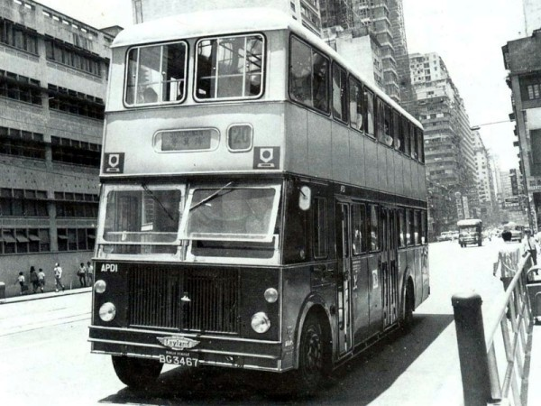
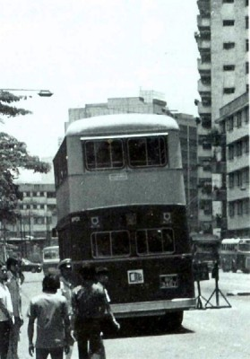
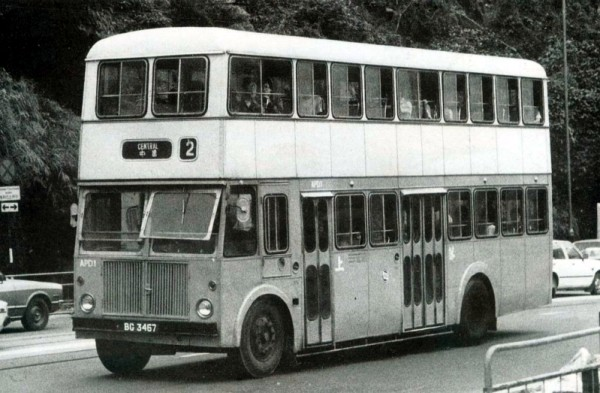
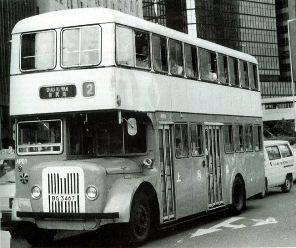

|
APD車系----Ashok Leyland "Titan" ALPD1/1 |

印度製造、剛投入服務不久的APD1，正行走特快20號線，途經中巴北角總部門外。車頭的牌箱十分有趣，目的地顯示牌設在中央位置，而號碼牌是後來加裝的，因此位置偏左。
1973年，中巴考慮向"Ashok Leyland"引進一輛"Ashok Titan" ALPD1/1來港試用，以作評估。中巴為這部新車選配了"Ashok Leyland"生產的O.680引擎以及英國利蘭生產的SCG340半自動波箱。原裝印度使用的波箱是五前速恆久齒合波箱，推動後輪，因此半自動波箱並不是"Ashok Titan" ALPD1/1的標準配備。但這個設計著實是落後，因此中巴自行決定改用半自動波箱，以統一機械零件及方便司機駕駛。
中巴替新車選配了印度孟買的"Sion Coachworks"製造的鋁質車身，造型四四方方，實而不華。車身總長度為31呎6吋，較「PD」車系長1呎6吋。車頭部份與PD一樣，同樣為密封式設計。
|
 |
由於車身笨重，較一般的巴士重達一噸之多!!令巴士的總載客量減低了許多，主要為企位數目。車身總載客量為84人，包括上層45個座位、下層31個座位及8個企位。 由於印度的天氣炎熱，因此印度人設計的「鬼面罩」為兩扇四方型的散熱網，大大加強了引擎的散熱效果。 這個設計當然也適用於香港這個亞熱帶地區了。 有趣的是，在印度的雙層巴士，是使用車尾開放式平台設計，當中巴要求車身廠方把車身裝設車門時，一度令車廠摸不著頭腦﹕「車門的用意何在?!」。 新車於1974年5月投入服務，中巴為新車編制為APD，編號為APD1。巴士一直長期由柴灣車廠管理，編配行走筲箕灣的2號、20號線，直至退役。由於巴士造型古怪，中巴員工都戲稱APD1為「印度神油」、「小露寶」等稱號。 由於APD1的載客量不多，加上車廠交貨期長、車身笨重，又難於操控，因此中巴後來亦沒有再加訂同型號車輛。同時，APD1投入服務不久即成為中巴車隊內的黑名單，很多司機都拒絕駕駛此車，令APD1於後期即成為車廠裡的「大後備車」，絕少派出行走。 <--APD1的車尾模樣 |

1983年，難以操控的APD1成為2號線的字軌車，與其他PD一起擔綱行走。當時的「車房」特別編排此車給一些新晉司機駕駛!!
1984年，中巴為配合港府的要求，需要把車隊內部份車齡過高的巴士延長使用，但必須先把延長使用的車輛進行翻新工程，詳情請瀏覽PD500系列(Leyland Titan PD3/5)分頁之介紹。APD1與其餘14輛「PD」被中巴挑選進行改裝，使用退役的「S」、「LS」的部件，令這些「PD」改裝成為一輛使用Gardner 6LX引擎、半自動波箱的半艙式巴士，機械配搭與一輛「LX」無異。
改裝後的APD1，依舊被派往2號線服務，但仍然不受司機歡迎。及後於1986年，APD1因發生車禍，因此長期擱置於車廠內，直至1988年正式宣告退役。

改裝後的APD1，成為一輛半艙式巴士，前、後車門亦更換了，但卻出現上層車身較下層長12英吋的奇怪模樣。
以上圖片來源﹕HONG KONG BUSES VOL.1--Mike Davis